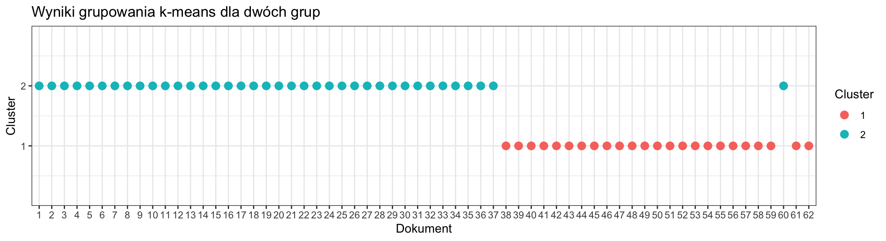
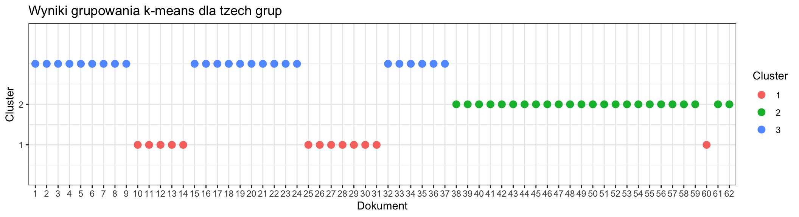
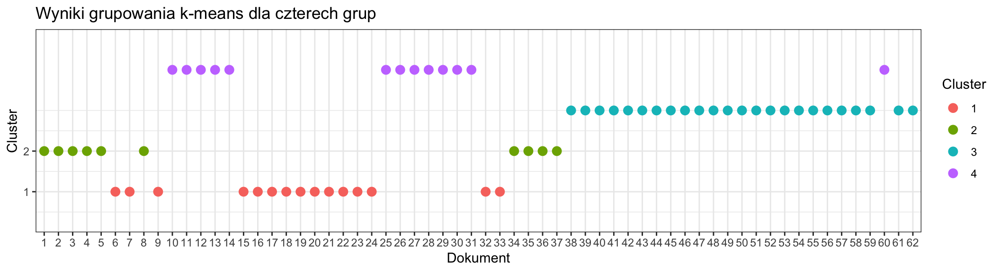

Do grupowania została wybrana metoda niehierarchiczna k-means. Początkowe założenie dotyczyło wyodrębnienia dwóch grup z uwagi na charakter danych (dwie różne książki), jednakże zdecydowano się porównać z większa ilością.
dtm_norm_m <- as.matrix(dtm_tf)
dtm_norm <- t(scale(t(dtm_norm_m),
center=FALSE,
scale=sqrt(rowSums(dtm_norm_m^2))))--------------------------------------------------------------------------------------------------------------------------------------------------------
km2 <- kmeans(dtm_norm, 2)
km3 <- kmeans(dtm_norm, 3)
km4 <- kmeans(dtm_norm, 4)--------------------------------------------------------------------------------------------------------------------------------------------------------
Dla dwóch grup
cluster_df <- data.frame(Dokument = rownames(dtm_norm), Cluster = km2$cluster)
ggplot(cluster_df, aes(x = reorder(Dokument, as.numeric(Dokument)), y = Cluster, color = factor(Cluster))) +
geom_point(size = 3) +
scale_color_discrete(name = "Cluster") +
labs(x = "Dokument", y = "Cluster", title = "Wyniki grupowania k-means dla dwóch grup") +
theme_bw() +
scale_y_continuous(limits = c(0.5, 2.5), breaks = c(1, 2), expand = c(0, 0.5))
Dla trzech grup
cluster_df3 <- data.frame(Dokument = rownames(dtm_norm), Cluster = km3$cluster)
ggplot(cluster_df3, aes(x = reorder(Dokument, as.numeric(Dokument)), y = Cluster, color = factor(Cluster))) +
geom_point(size = 3) +
scale_color_discrete(name = "Cluster") +
labs(x = "Dokument", y = "Cluster", title = "Wyniki grupowania k-means dla tzech grup") +
theme_bw() +
scale_y_continuous(limits = c(0.5, 3.5), breaks = c(1, 2), expand = c(0, 0.5))
Dla czterech grup
cluster_df4 <- data.frame(Dokument = rownames(dtm_norm), Cluster = km4$cluster)
ggplot(cluster_df4, aes(x = reorder(Dokument, as.numeric(Dokument)), y = Cluster, color = factor(Cluster))) +
geom_point(size = 3) +
scale_color_discrete(name = "Cluster") +
labs(x = "Dokument", y = "Cluster", title = "Wyniki grupowania k-means dla czterech grup") +
theme_bw() +
scale_y_continuous(limits = c(0.5, 4.5), breaks = c(1, 2), expand = c(0, 0.5))
Biorąc pod uwagę podział dokumentów na 1-37 dla pierwszej książki i 38-62 dla drugiej książki, na podstawie wykresów można wnioskować, że podział na dwie grupy jest najrozsądniejszy. Dzieli wspomniane powieści na dwie grupy, poprawnie przypisując dokumenty (za jednym wyjątkiem). Należy zwrócić uwagę na podobieństwo, wręcz identyczność przypisania dokumentów do grup jak w przypadku analizy wątku za pomocą LDA.
Pomimo wybrania grupowania na 2 grupy, na podstawie wszystkich wykresów można zauważyć, że to powieść “W 80 dni dookoła świata” zostaje poddana dalszym podziałom, podczas gdy “Wokół księżyca” pozostaje jedną grupą poza wspomnianym już niejednokrotnie dokumentem 60, czyli przeodstatnim rozdziałem, w każdej kombinacji należy do innej grupy.